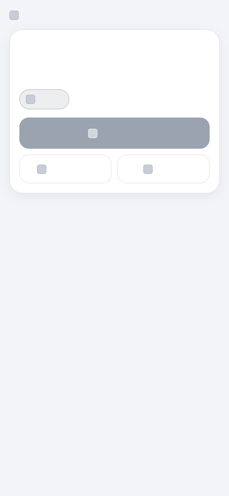
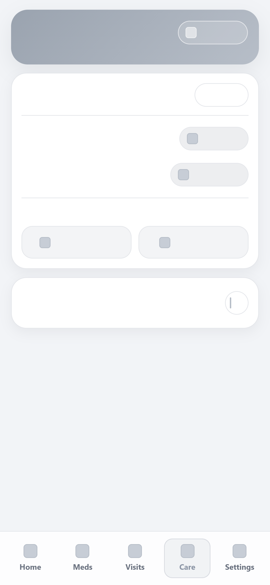
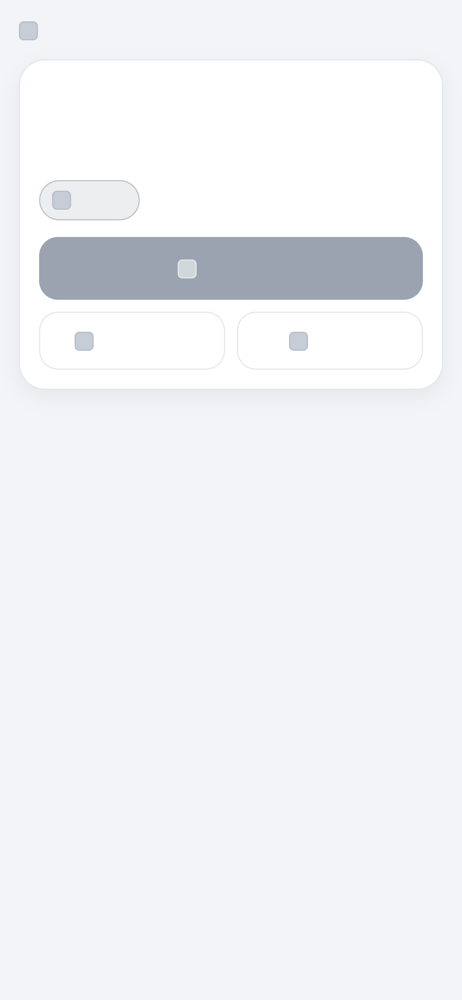
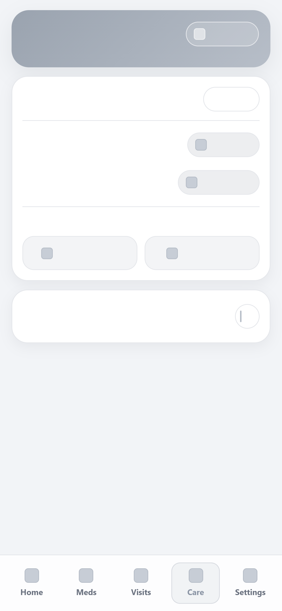

Health Companion Super App
UX/UI Case Study
Introduction
App Overview
Patients living with chronic health conditions often struggle to consistently manage their medications and medical appointments. This challenge becomes more significant during non-routine days or when individuals experience psychological stress, cognitive overload, or personal distractions. Missed doses and forgotten appointments can negatively affect treatment outcomes and overall health stability.
The Health Companion Super App is designed to provide a simple, reliable, and accessible user experience that supports medication adherence and appointment management. The application reduces cognitive load through structured reminders, clear visual hierarchy, and intuitive navigation.
In addition to medication tracking, the app offers quick access to hospital hotlines and personal healthcare providers, positioning it as a centralized health companion. Special emphasis is placed on accessibility, privacy, and trust, ensuring that users feel confident and secure while managing sensitive medical information.
Problem Context
Existing health applications often focus on isolated features such as reminders or appointment booking, but rarely integrate medication management, communication access, and emergency resources into a single cohesive experience. This fragmentation increases cognitive load and reduces long-term engagement.
Project Goals
- Increase the likelyhood of on-time medication adherence
- Reduce missed medical appointments
- Minimize cognitive load associated with health management
- Provide a centralized and trustworthy health management platform
- Ensure accessibility for elderly users while maintaining efficiency for young people.
User Research
Research Methodology
Research combined:
- Competitive analysis of leading medication management applications
- Review mining of publicly available user feedback
- Rapid secondary review of medication adherence literature
Data Sources Overview
Rather than conducting a primary survey, this study analyzed publicly available user reviews from three established medication management applications: Medisafe, MyTherapy, and Dosecast. The collected reviews represent diverse users managing recurring medications, including long-term chronic conditions and short-term prescriptions.
Key Findings
- Users frequently experience reminder reliability issues
- Complex onboarding and multi-step actions create frustration
- Excessive notifications lead to disengagement
- Users want simple, fast interaction rather than feature-heavy systems
- Limited data export and privacy transparency reduce trust
Thematic Analysis
| Theme | Evidence from Review Analysis | Design Impact |
|---|---|---|
| Reminder Reliability | Users report delayed or buggy notifications | High-reliability reminder engine |
| Interaction Friction | Multi-step confirmations and forced fields frustrate users | One-tap confirmation system |
| Notification Fatigue | Aggressive or repetitive alerts cause annoyance | Customizable and adaptive alerts |
| Feature Overload | Interfaces described as cluttered or overwhelming | Minimalist and focused UI design |
| Data Ownership | Difficulty exporting records and privacy concerns | Simple export and transparent data controls |
Cross-Application Issue Comparison
| Issue | Medisafe | MyTherapy | Dosecast |
|---|---|---|---|
| Notification Reliability Issues | ✓ | ✓ | ✓ |
| Complex / Fragmented UI | ✓ | ✓ | ✓ |
| Data Export Limitations | ✓ | ✓ | ✓ |
| Subscription / Premium Friction | ✓ | ✓ | ✓ |
| Forced Login / Cloud Sync | × | × | ✓ |
| Interaction Irreversibility | ✓ | ✓ | ✓ |
User Personas
From the review analysis and competitive research, three main types of users became clear. These personas represent real usage patterns observed in existing medication management apps. Each one highlights a different way people interact with these systems: someone who depends on reminders working reliably, someone managing a stable daily routine who wants simplicity, and someone coordinating care for another person.
Daniel
Daniel represents users who rely heavily on reminders to manage medication that must be taken at specific times. For this group, the biggest concern is reliability. If a reminder fails or is delayed, it can disrupt their entire day. They are less interested in extra features and more concerned with knowing the app will work consistently without needing to double-check it.
Linda
Linda represents users who take medication as part of a long-term, stable routine. They use the app mainly as a support tool and prefer something simple that fits naturally into their day. Complicated interfaces, extra steps, or frequent design changes can feel frustrating because they interrupt habits that are already established.
Maria
Maria represents caregivers who are managing medication for someone else, such as a parent or family member. In this case, the goal is not just receiving reminders, but being able to see information clearly, coordinate with others, and understand what has already been done. These users need shared visibility and clarity rather than personalization or advanced features.
User Journey Maps
Journey Map – Daniel
| Stage | Action | Emotion | Pain Point |
|---|---|---|---|
| Realization | Notices reduced focus and realizes he may have missed medication | Concerned | Cannot immediately confirm medication status |
| Verification | Opens the app to check history and sees an earlier reminder | Frustrated | System reliability is unclear |
| Double-Checking | Re-checks logs multiple times throughout the day | Anxious | Lack of trust forces repeated manual verification |
| Interruption | Receives a notification but must open the app to confirm | Skeptical | Cannot rely on notification alone |
| Configuration | Tries to add or adjust medication plan | Overwhelmed | Multi-step forms and unclear workflow |
Journey Map – Linda
| Stage | Action | Emotion | Pain Point |
|---|---|---|---|
| Morning Routine | Opens app as part of daily habit to confirm medication | Calm | Wants quick confirmation without disruption |
| Logging | Attempts to mark medication as taken | Annoyed | Too many prompts or confirmation steps |
| Interaction | Navigates through checkboxes and extra fields | Frustrated | App adds unnecessary complexity |
| Update | Notices interface changes after an app update | Confused | Familiar workflow has changed unexpectedly |
Journey Map – Maria
| Stage | Action | Emotion | Pain Point |
|---|---|---|---|
| Care Coordination | Checks medication status for her father before visiting | Responsible | Needs quick overview across schedules |
| Accessing Info | Logs into app from another device | Confused | Account or device restrictions create friction |
| Verification | Looks for instructions on dosage or timing | Pressured | Information buried in multiple menus |
| Monitoring | Reviews whether medication has been taken | Cautious | No clear shared visibility between caregivers |
Storyboard & Flow
Visual Narrative
To provide a clear visualization of the user interaction flow, we developed a storyboard for our persona, Linda, demonstrating how she uses the app to maintain her long-term medication routine. This sequence illustrates a design that prioritizes minimal friction and reinforces established habits.

User Flow Diagram
The following diagram represents the navigation and task flow of the application, showing the simplified path from notification to confirmation.
Sketches and Wireframes
Low-Fidelity Sketch Iterations
The design process began with hand-drawn sketches to explore layout ideas. Two iterations were created to progressively refine structure, hierarchy, and usability.
Wireframes
Based on the validated sketches, higher-fidelity wireframes were produced to translate the conceptual layouts into structured digital designs. These focus on defining content placement and functional grouping.
 



UI Design Decisions
Color Palette
The color system was intentionally limited to a small set of functional colors to reduce cognitive load and maintain clarity.
- Primary Blue (#2F6FED): Used for navigation, headers, and key elements. Selected for trust and stability.
- Confirmation Green (#24A67B): Used for successful actions. Provides clear, positive feedback signal.
- Neutral Backgrounds (#F5F7FB, #FFFFFF): Create a calm interface and reduce visual fatigue.
- Support Grays (#6B7280): Used for secondary information and content structure.
Typography
The interface uses a system sans-serif typeface (Inter / SF Pro) to ensure readability and performance.
- Minimum base size of 16px to support accessibility.
- Clear typographic hierarchy with bold headings and muted secondary text.
- System fonts for consistency with native mobile environments.
Layout and Interaction Style
The UI follows a mobile-first, card-based layout inspired by native iOS design patterns.
- Rounded cards visually separate tasks into manageable units.
- Single-action screens minimize decision complexity.
- Bottom navigation bar provides persistent access to core sections.
- Generous spacing reduces accidental taps and supports users with limited dexterity.
Interactive Prototype
The interactive prototype was implemented as a lightweight web-based simulation to validate navigation clarity and task flow.
Interactive Prototype Screens overview
Usability Testing
Testing Plan
Because this project focused on design and prototyping rather than deployment, a hypothesis-driven evaluation was used instead of formal usability testing. This approach assesses whether the design decisions logically address the usability problems identified during research.
Evaluation Rationale
Prior review analysis revealed that existing medication-management applications suffer from multi-step interaction flows, visual/functional overload, and lack of trust caused by unclear system feedback.
Design Hypotheses
- H1: A one-tap medication confirmation flow will reduce cognitive effort compared to multi-step logging workflows.
- H2: A minimal, card-based layout will improve information scanning and allow users to verify tasks more quickly.
- H3: Persistent bottom navigation will provide predictable movement between tasks.
Analytical Validation
Confirming a medication requires a single action from the home screen, eliminating navigation depth. Each screen presents one primary purpose, avoiding feature competition. Information is grouped into discrete cards, enabling rapid visual parsing.
Expected Outcomes
- Reduce decision time for recurring tasks
- Improve adherence through predictable confirmation feedback
- Lower user fatigue during repeated daily interactions
Reflection
This project demonstrated how small usability frictions can significantly affect adherence behaviors in health-related contexts. By grounding design decisions in real user feedback rather than feature expansion, the final solution emphasizes reliability, clarity, and low cognitive demand. The iterative process reinforced that, for routine-driven applications, reducing interaction complexity is more valuable than adding functionality.
Conclusion
The Health Companion Super App illustrates a user-centered approach to designing for consistency-driven tasks such as medication adherence and care coordination. Through research synthesis, persona modeling, workflow simplification, and iterative prototyping, the design prioritizes trust, accessibility, and efficiency over feature density. The resulting system provides a focused, scalable foundation for supporting both independent users and caregivers in managing daily health responsibilities.